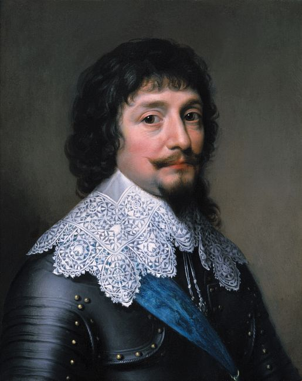

You can read my rendition of Olia Lialina's classic essay, Turing Complete User, if you click here.
Here's a picture of me from last year.
Are you seeking an exceptional opportunity to drive positive change in your community and become an environmental leader in Ottawa? Do you have ideas for how to make Ottawa a greener, more resilient city? Do you consider yourself a team-builder, an organizer and mobilizer? If so, you just might be the person we’re looking for to become the next Executive Director of Ecology Ottawa. As Executive Director, you are responsible for expanding engagement to carry out Ecology Ottawa’s mission. This includes employing community organizing techniques, training staff in those techniques, and identifying opportunities to empower Ottawans to deepen environmental action. As the head organizer, the Executive Director will oversee rollout and maintenance of this organization-wide effort to help create a sustainable city -a city that values and prioritizes clean air & water, clean energy, active & public transportation and the protection of greenspace and nature.
Are you seeking an exceptional opportunity to drive positive change in your community and become an environmental leader in Ottawa? Do you have ideas for how to make Ottawa a greener, more resilient city? Do you consider yourself a team-builder, an organizer and mobilizer? If so, you just might be the person we’re looking for to become the next Executive Director of Ecology Ottawa. As Executive Director, you are responsible for expanding engagement to carry out Ecology Ottawa’s mission. This includes employing community organizing techniques, training staff in those techniques, and identifying opportunities to empower Ottawans to deepen environmental action. As the head organizer, the Executive Director will oversee rollout and maintenance of this organization-wide effort to help create a sustainable city -a city that values and prioritizes clean air & water, clean energy, active & public transportation and the protection of greenspace and nature.